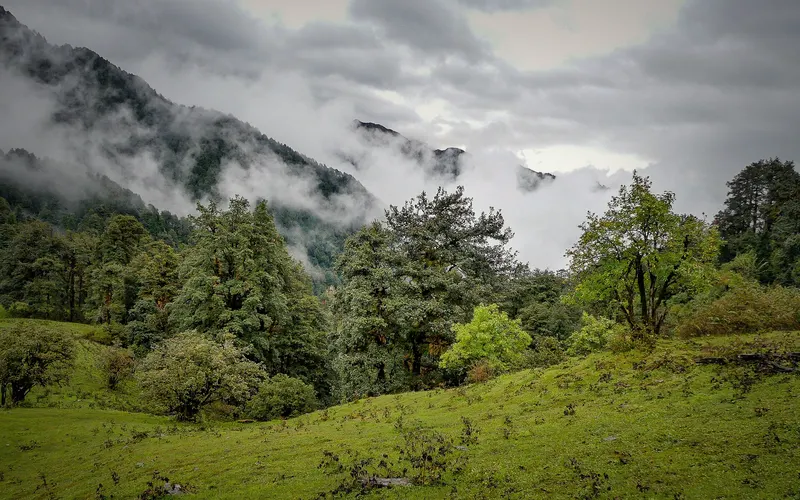
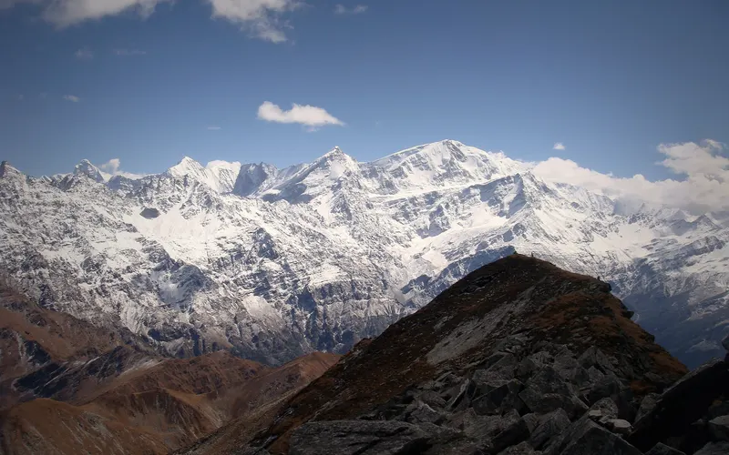
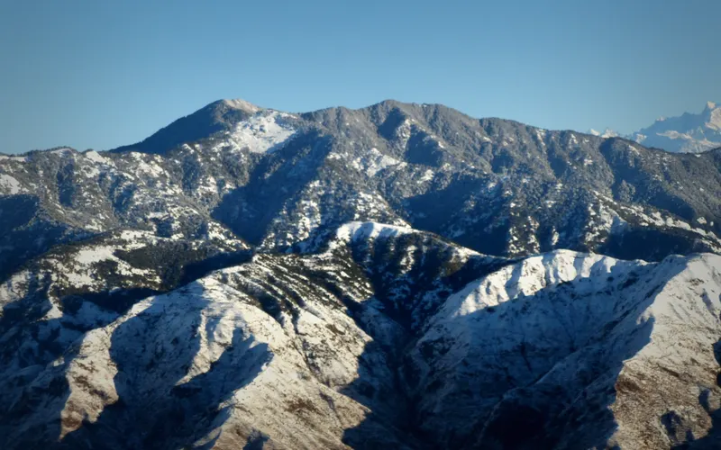
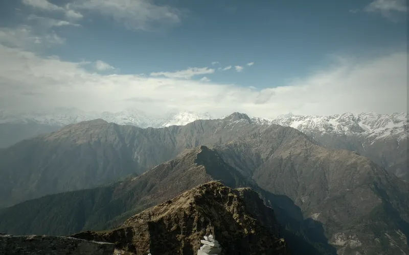

4 treks
Uttarakhand treks whose sources call March one of their best months.
| Trek | Highest point | Days on trail | Difficulty | Best months |
|---|---|---|---|---|
| Dayara Bugyal | 3,750 m | 5 | Easy | Dec–Mar |
| Pangarchulla | 4,590 m | 7 | Hard | Mar–Apr, Oct–Dec |
| Nag Tibba | 3,022 m | 3 | Not graded | Dec–Mar |
| Chopta Chandrashila | 3,700 m | 5 | Not graded | Mar–Apr |

Easy · 5 daysPhoto: Mike Prince from Bangalore, India, CC BY 2.0
Dayara Bugyal
▲ 3,750 m · Best Dec–Mar
Hard · 7 daysPhoto: ShwethaSulegai, CC BY-SA 4.0
Pangarchulla
▲ 4,590 m · Best Mar–Apr, Oct–Dec
Not graded · 3 daysPhoto: Paul Hamilton, CC BY-SA 2.0
Nag Tibba
▲ 3,022 m · Best Dec–Mar
Not graded · 5 daysPhoto: Rahul upreti, CC BY-SA 4.0
Chopta Chandrashila
▲ 3,700 m · Best Mar–AprQuestions
Which are the treks in uttarakhand in march?
The Treqz atlas lists Dayara Bugyal, Pangarchulla, Nag Tibba, Chopta Chandrashila.
Which is the easiest of the treks in uttarakhand in march?
Dayara Bugyal: graded Easy, 5 days on the trail.
Which is the highest of the treks in uttarakhand in march?
Pangarchulla, with a highest point of 4,590 m.
Which is the shortest of the treks in uttarakhand in march?
Nag Tibba: 3 days on the trail.